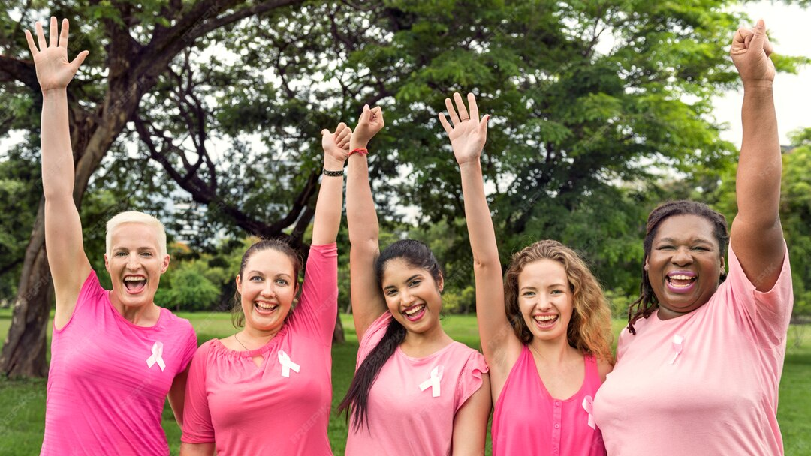
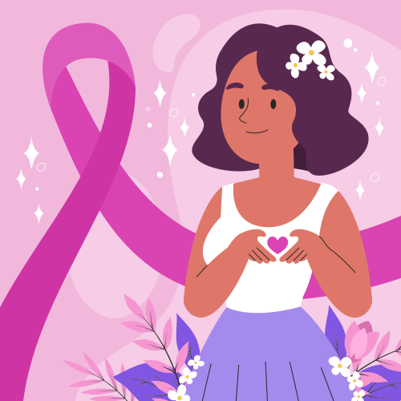

¡Bienvenidas Mujeres!
Nuestra Dirección de la Mujer e Igualdad de Género de la Alcaldía de Diego Ibarra se tiñe de rosa para unirse a una causa global: La Lucha Contra el Cáncer de Mama. Este no es solo un color; es un símbolo de esperanza, un recordatorio de la importancia de la prevención y una muestra de solidaridad con las miles de mujeres que enfrentan esta enfermedad.
Aquí encontrarás información relevante sobre nuestros servicios, nuestro compromiso con la comunidad y cómo puedes unirte a las actividades sobre la Prevención Contra el Cáncer de Mama que realizaremos en este mes.
¿Quienes Somos?
Una unidad que desarrolla políticas públicas y acciones relacionadas con la condición y situación de las mujeres del municipio Diego Ibarra.
Nuestra Misión
Somos una dirección de la Alcaldía Bolivariana del Municipio Diego Ibarra que diseña, ejecuta y evalúa políticas públicas con enfoque de género e interseccional, orientadas a garantizar el pleno desarrollo, la inclusión social, política, cultural y económica de las mujeres. Promovemos la defensa de sus derechos, el acceso a la justicia, la formación integral y el emprendimiento, contribuyendo a una vida libre de violencia y a la construcción de una sociedad más justa e igualitaria.
Nuestra Visión
Ser una dirección municipal de referencia en la promoción de la igualdad de género y el empoderamiento de las mujeres, creando oportunidades que fortalezcan el bienestar, la autonomía y la participación plena de las mujeres en todos los ámbitos de la vida.
Nuestros Servicios de Apoyo
Atención Psicológica
Ofrecemos servicios de orientación, acompañamiento y evaluación psicológica dirigido a mujeres víctima de violencia, discriminación, problemas familiares, entre otros. A su vez dictamos conversatorios, talleres y dinámicas de grupo para concientizar sobre temas de salud mental y violencia de género.
Asesoría Legal

Nuestro equipo legal está comprometido con la defensa de tus derechos guiándote en cada etapa del proceso, garantizando un trato digno y confidencial diseñado para empoderarte y proteger tus derechos.
Formación y Emprendimiento
Nuestras capacitaciones están diseñado para proporcionar las habilidades técnicas y prácticas que necesitas para dominar un oficio específico, desde la costura y la pastelería hasta la gestión de un pequeño negocio.
Atención Ginecológica y Obstétrica
Brindamos consultas para el control regular de tu salud, chequeos preventivos y orientación sobre métodos anticonceptivos. Te ofrecemos seguimiento y apoyo durante todo tu embarazo, desde la primera consulta hasta el parto y el postparto, garantizando una experiencia segura y tranquila.
Octubre se pinta de Rosa
En este mes, queremos invitarte a ser parte activa de esta campaña. Sabemos que el cáncer de mama es una realidad que afecta a muchas familias, pero también sabemos que la detección temprana es nuestra arma más poderosa. Un diagnóstico a tiempo puede marcar la diferencia entre la vida y la muerte.
Frases Inspiradoras
"La prevención está en tus manos. Haz del autocuidado un hábito."
"Tu salud es tu mayor tesoro. Cuídala, valórala y protégela."
"Juntas somos más fuertes. Unidas por la prevención y la esperanza."
Planificación de Octubre
- 01 de Octubre: Loanding...
- 02 de Octubre: Loanding...
- 03 de Octubre: Loanding...
- 04 de Octubre: Loanding...